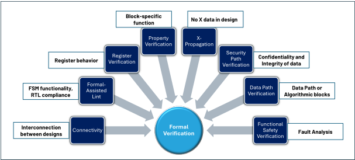
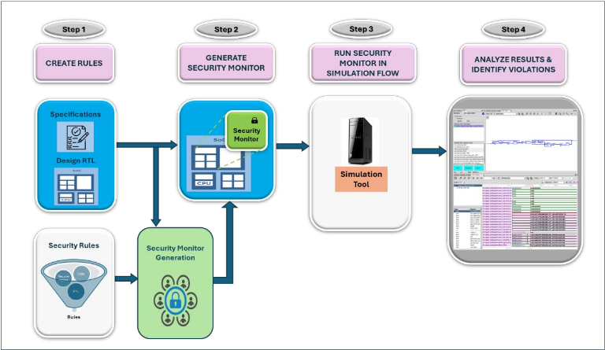
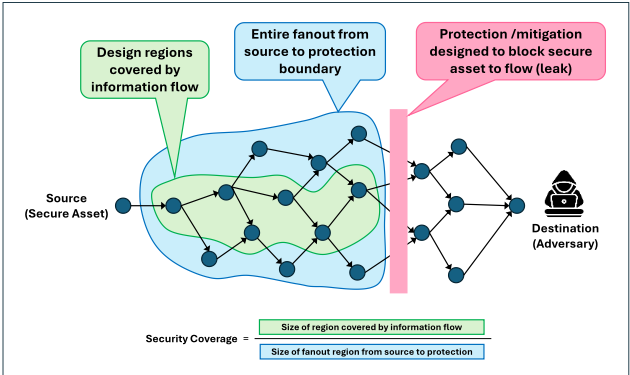
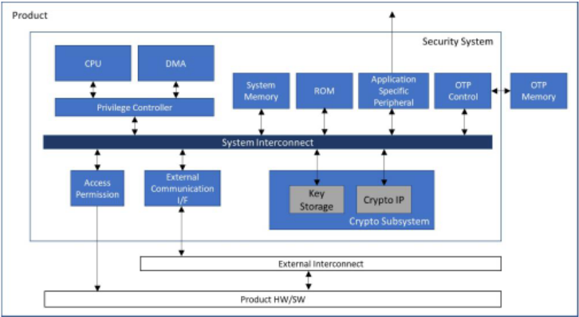
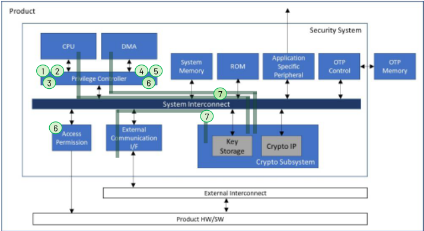
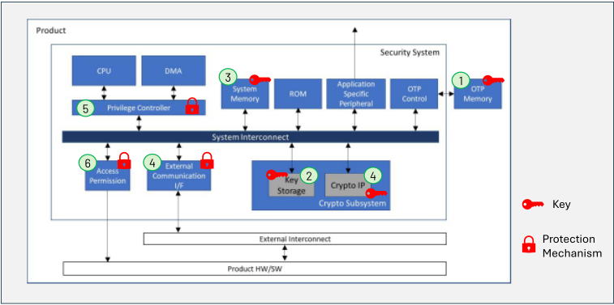

加速安全验证的有效方法学
论文针对 SoC 安全漏洞难以被设计评审与功能验证计划捕获、手工 checker 不可扩展的问题，提出一套加速安全验证的方法学。方法上，从设计规格与 MITRE CWE 列表识别安全需求并形成 security verification plan；对 CWE 类需求按三步法选用 formal apps（信息流跟踪、寄存器验证、X-propagation、formal-assisted lint 等）做穷尽检查；对规格类需求用 EDA 工具自动生成 SystemVerilog security monitor，经 bind 挂载、注入 taint 并复用既有功能验证 test 检查信息流违规；最后以仅统计安全相关逻辑的 security coverage 作为 sign-off 标准。在一个含 CPU/DMA master 与 privilege controller 的安全子系统上，formal 在已稳定设计中发现 CWE 1314 越界与 CWE 1317 密钥可被 non-secure CPU interface 读取两个问题，但有一条 property 未收敛；仿真侧复用 test 修改后全部通过且未发现新错误。结论是 formal 与仿真互补覆盖 block 到 system 级安全验证，security coverage 提供可度量的 sign-off 依据。
SoC 中需保护的硬件/软件资产不断增多，而安全相关设计漏洞难以在设计评审、设计规格或功能验证计划中被捕获；设计规模增大会扩大 attack surface，为特定区域手工创建 checker 耗时到不切实际，集成第三方 IP 也可能引入弱点。论文要解决如何系统化识别安全需求（规格 + CWE 弱点）、结合 formal 与仿真方法加速安全验证，并以可度量的 security coverage 作为 sign-off 标准，使硬件安全 signoff 成为 RTL sign-off 的内在组成部分。
方法学由四部分组成：(1) 安全需求识别——从设计规格提取功能性安全需求（如 'Secure data in memory should not be read by non-secure bus master'），并参照 MITRE CWE 列表（如 CWE 1231 Improper Prevention of Lock Bit Modification）把设计弱点映射为验证目标，写入 security verification plan；(2) Formal 验证——按 'CWE 描述→定位设计组件→匹配 formal app' 三步法选用供应商 formal apps，包括跟踪信息流的安全专用 app，以及验证安全控制逻辑、寄存器行为、X-propagation、fault 检测、formal-assisted lint 的 app，适用于数百周期顺序深度的块/子系统级设计；(3) 仿真安全验证——用工具脚本自动生成 SystemVerilog security monitor，以 assert iflow（{Source Signal Set} =/=> {Destination Signal Set}）规则语法描述信息流规则，经 SystemVerilog bind 挂载到 testbench，向 source 注入 taint 并复用既有功能验证 test，检查 taint 是否到达 destination；(4) Security coverage——formal 侧统计安全相关逻辑的 code coverage，仿真侧度量 taint 从 source 到 rule protection boundary 的传播覆盖，作为区别于功能覆盖的 sign-off 依据。
Formal 验证在已稳定设计中发现两个真实安全问题：Access Permission 模块在寄存器设置超出有效范围时的越界问题（CWE 1314），以及 non-secure CPU interface 可读取 key information（CWE 1317）
Formal 验证中大多数 test 通过，但有一条 property 未收敛（结果为 Undetermined）
仿真安全验证中，部分复用 test 初期因未使能设计保护机制被 security monitor 报信息流违规，修改 test 后全部通过；由于设计已稳定，未发现新的设计错误
Formal 侧安全覆盖率为安全相关逻辑的 code coverage，总覆盖率低于 100% 但安全逻辑被 assertions 覆盖；仿真侧按 rule 度量 taint 从 source 到 protection boundary 的传播覆盖，加入 protection boundary 信号后覆盖率上升（论文正文未给出具体数值，表格数据未在正文展示）
相对已有工作的区别：(1) 安全需求不仅来自功能规格，还通过 MITRE CWE 系统化映射为验证目标，形成更完整的需求集合；(2) 用安全验证 EDA 工具自动生成 security monitor 并复用既有功能验证 test，几乎不增加 testbench 开发与 test 编码时间；(3) 提出只统计安全相关逻辑的 security coverage（formal 侧为安全逻辑 code coverage，仿真侧为 source 到 protection boundary 的 taint 传播覆盖），作为区别于功能覆盖的 sign-off 度量；(4) 明确 formal 与仿真在 block 到 system 级安全验证上的互补分工（formal 穷尽但受收敛限制，仿真可覆盖 formal 未收敛的部分）。
相关度级别：high
命中能力域：2.4 设计验证方法学 | 2.5 形式验证与等效性检查
理由：论文直接命中团队 2.4 设计验证方法学（覆盖率驱动验证、sign-off 策略、UVM 平台与回归 test 复用）与 2.5 形式验证（formal property checking、formal apps、寄存器/X-propagation/lint 检查）两个核心能力域。团队交付的 LPDDR/HBM/UCIe 等 IP 中普遍存在寄存器 lock bit、访问权限控制、privilege 管理等安全相关控制逻辑，与论文案例中的 Access Permission 块、privilege controller 场景同构；CWE 需求映射、formal apps 选型三步法与自动生成 security monitor 的 taint 信息流检查可直接迁移到 IP 验证与 sign-off 流程，security coverage 也为团队补充了功能覆盖之外的安全 sign-off 度量。需注意论文案例是 SoC 级安全子系统而非存储/互连协议 IP 本身，落地时需按 IP 场景裁剪需求与规则。
建议动作：深入精读并做内部分享
| 0 | 1 | 2 |
|---|---|---|
| Lee Anthony Grajo | Ponnambalam Lakshmanan | Anders Nordstrom |
| Analog Devices | Analog Devices | Cycuity, Inc. |
| Cavite, Philippines | Bangalore, India | San Jose, CA |
| leeanthony.grajo@analog.com | ponnambalam.lakshmanan@analog.com | andersn@cycuity.com |
| 0 | 1 | 2 |
摘要：市场对片上系统（System-on-Chip, SoC）的需求日益增长，此类系统包含多种硬件和软件资产，必须防范未经授权的访问以及敏感数据的泄露。采用正确的方法来加速安全验证流程并实现安全硅片至关重要。本文深入探讨了从规格说明和外部参考资料中识别安全需求的过程、形式化与基于仿真的安全验证方法的应用，以及作为签核（sign-off）策略组成部分的安全覆盖率度量。
计算系统如今已深深融入日常生活。这些系统被应用于汽车、物联网（Internet of Things, IoT）等众多领域。这使得构建并验证能够抵御各种威胁与攻击、保护敏感数据的安全系统的需求日益增长。
当今复杂系统的广泛使用及其暴露于多种形式的攻击之下，使得聚焦安全验证变得更加重要。确保硬件控制与数据路径的安全，对于全面的系统安全策略而言至关重要。设计人员和安全架构师可以部署硬件安全验证与分析，主动识别并消除可能被攻击者利用的漏洞，从而使硬件安全签核成为其寄存器传输级（RTL）签核的固有组成部分。识别分布于整个设计中的安全资产并找出可能的设计弱点是一项繁琐的任务，因此设计人员、验证工程师和系统架构师必须协同工作来识别并验证这些内容，这已成为绝对必要。
在安全验证中，验证工程师必须确保设计能够经受住所有可能的攻击。这并不像验证设计的功能那样直接，因此带来了一些挑战。与安全相关的设计漏洞不易在设计评审中被识别，也难以被纳入设计规格说明或功能验证计划之中。当设计规模变大时，攻击面也可能随之扩大。为设计的特定区域创建手动检查器（checker）会耗费大量时间，以至于变得不切实际。在系统设计中包含第三方 IP，在与系统中其他模块集成时可能引入弱点[1]。
为帮助克服这些挑战，本文引入了有效的安全验证方法学。该方法始于安全需求的识别，在此过程中会考虑安全资产和设计弱点。利用形式验证和基于仿真的验证的优势，可确保以更有针对性的方法来验证安全需求。在安全验证中纳入覆盖率，为衡量验证工作提供了度量指标，并可作为签核的准则。
MITRE 通用弱点枚举（CWE）是一个全面的、由社区驱动的目录，其中收录了可能导致安全漏洞的软件和硬件弱点[2]。它可作为识别和描述各类缺陷的标准参考，这些缺陷的范围涵盖从缓冲区溢出、竞态条件等编码错误，到身份验证不当或不安全的默认配置等设计层面的问题。CWE 信息用于将适用的弱点映射为验证目标，这些验证目标被记录在验证计划中，从而扩充了传统的功能验证测试项。安全验证测试项被实现为仿真测试、形式属性、静态检查项，或上述测试方法的组合。
功能安全验证旨在确保设计的安全特性按照规范运行。此类设计的示例包括控制机制、特权级与锁定机制、启动序列以及保护逻辑。其验证方法与设计中非安全特性的验证方法类似，即使用检查器、断言或参考模型来验证预期行为。
基于信息流分析的安全验证起源于通过分析数据如何在软件与硬件组件中传播来严格确保计算系统机密性与完整性的需求。其根源可追溯至20世纪70年代和80年代关于非干扰性（noninterference）的基础性工作——这是一种为防止高安全级别数据影响低安全级别输出而引入的形式化属性。随着时间的推移，这一概念逐渐演变为更复杂的模型，如信息流跟踪（information flow tracking, IFT），该模型为数据分配安全标签并监控其流动，以检测未授权的数据流[3]。这些技术最初应用于操作系统和编程语言，后来扩展到硬件验证领域，尤其是随着时序侧信道、推测执行和硬件木马等威胁日益突出。如今，IFT已成为硬件安全验证的基石，使设计者能够验证敏感数据在复杂架构中始终受到保护。
这项工作的方法由以下部分组成：识别安全需求并将其记录在安全验证计划中，使用形式化验证和带覆盖率测量的仿真执行验证，以及分析测试和覆盖率结果。
安全需求可以是功能性的，并且可以被记录在需求或设计规范中。这类需求的一个例子是“存储器中的安全数据不应被非安全总线主设备读取”。该需求包含了诸如安全数据的位置、攻击面以及安全目标（机密性或完整性）等细节。
设计中还存在一些未被记录在规范中的弱点。这些弱点可以通过诸如 MITRE 通用弱点枚举（CWE）列表等参考资料来识别。CWE 弱点的一个例子是“CWE 1231 - Improper Prevention of Lock Bit Modification”（锁定位修改的不当防护）。该描述并不包含安全数据的位置，但可以包含实现安全相关逻辑的设计。可以基于 CWE 描述以及设计中受影响的模块来创建一条需求。该需求可以表述为：“Block A 的锁定位在启动后不应被修改。”这一表述可以基于设计规范中的更多细节加以改进。识别设计中适用的弱点还将有助于验证工程师开发针对这些弱点的测试用例。
在形式验证（Formal verification）中，可以根据基于规范的需求或基于 CWE 的需求的描述、示例和检测方法，使用形式验证工具供应商提供的各种形式化应用（formal apps）。在形式验证中执行穷尽检查可以大大增强对设计的信心，因为它能够覆盖所有可能的输入组合，并能够命中极端场景（corner-case scenarios）。具有数百个周期时序深度的模块级或子系统级设计是形式验证的良好候选对象。一些形式化应用是安全专用的，通过跟踪信息流来针对设计路径中的机密性和完整性问题。其他应用则用于验证实现了安全专用控制逻辑、寄存器行为、非预期的 X 传播（X-propagation）或设计中故障检测的设计。图 1 展示了可用于安全验证的一些形式化应用。

在基于仿真的安全验证中，一个称为“安全监视器”（security monitor）的附加测试平台（testbench）组件用于验证被定义为“规则”（rules）的机密性或完整性需求。安全监视器是一个由工具生成的 SystemVerilog 模块，用于跟踪信息流。如图 2 所示，该过程可总结为四个步骤。

一条安全规则由以下部分组成：
安全规则使用如下所示的简单语法创建：
assert iflow ( { Source Signal Set } =/=> { Destination Signal Set } );
安全监视器是由安全验证 EDA 工具生成的一个测试平台组件。它按照规则中的描述跟踪设计中的信息流。该监视器通过一个包含工具特定命令的脚本来生成。
安全监视器通过 SystemVerilog bind 绑定到设计上。先前为功能验证创建的所选测试（或多个测试）被复用于安全验证。安全验证工具向源注入污点（taint）数据，监视器检查该数据是否到达目的地。当污点到达目的地时，规则即被违反。规则通过表明设计的保护逻辑已阻止任何污点传播到保护边界之外。由生成的安全监视器输出的仿真日志消息指示规则是通过还是被违反。
规则被违反意味着存在从源到目的地的信息流。这种信息流通过安全验证工具的波形视图和路径视图高亮显示流中涉及的信号来实现可视化。
安全验证的完整性通过安全覆盖率度量来衡量。这与功能覆盖不同，功能覆盖的目标是实现对整个设计的覆盖。在安全覆盖中，只有设计中与安全相关的部分才被纳入覆盖率度量。目前安全覆盖率尚未标准化，但已有来自不同厂商的多种工具可用于测量安全覆盖率。在形式验证中，使用属性验证应用时可以测量与安全相关逻辑的代码覆盖率。当安全逻辑的代码覆盖率要求得到满足时，即实现了完整验证。在基于仿真的验证中，安全验证工具测量从源信号到规则保护边界的污染信号的覆盖率[4]。当污染已传播到从源到规则保护边界的所有信号时，即实现了对某条规则的完整验证。一旦所有安全覆盖率测量完成，即可做出签核决定。基于仿真的安全验证工具所测得的覆盖率如图3所示。

图4展示了一款包含安全系统的产品，该安全系统提供诸如与产品主机系统隔离、执行安全密码运算以及其他关键操作等安全解决方案。处理器（CPU）和直接存储器访问（DMA）是安全系统的主设备（管理者）。外部通信接口是产品与安全系统之间的通信通道。特权控制器设置特权级别，并充当存储器保护来管理对存储器和外设的访问。

该安全系统采用C代码、UVM验证平台、定向测试和SystemVerilog断言（SVA）相结合的方式进行了功能验证。这些验证方法并未针对发现与控制逻辑设计相关的安全弱点或来自信息流的机密性与完整性问题进行优化，因此开展了一项安全验证项目。
安全需求基于规格说明，并通过参考CWE列表检查可能的设计弱点而得出。仿真用于验证与规格相关的需求，而形式验证用于验证基于CWE的需求。
在对安全系统设计进行形式验证时，确定了适用的基于CWE的需求，并使用Formal app对其进行验证。确定使用何种formal app来验证设计采用了三个简单步骤。第一步是查阅MITRE CWE网站上可参考的CWE描述、示例和检测方法。第二步是确定需要验证的设计组件，这可以在设计规格说明或RTL代码中找到。最后一步是确定与前两步信息相匹配的formal app。多个formal app可能都可以用于测试某一特定需求。表I列出了适用于该安全系统的基于CWE的安全需求、待验证的设计（模块或顶层）以及用于验证的formal app。
| Requirement | CWE | CWE Description | Block/Top | Formal Tool |
|---|---|---|---|---|
| 1. Reserved register bits should not be usable | 1209 | Failure to Disable Reserved Bits | Privilege Controller | Register Verification |
| 1. Reserved register bits should not be usable | 1209 | Failure to Disable Reserved Bits | Privilege Controller | Property Verification |
| 2. Register default value should be correct according to specifications | 1221 | Incorrect Register Defaults or Module Parameters | Privilege Controller | Register Verification |
| 2. Register default value should be correct according to specifications | 1221 | Incorrect Register Defaults or Module Parameters | Security System Top | Property Verification |
| 3. Lock bits from Privilege Controller should not be modified after boot | 1231 | Improper Prevention of Lock Bit Modification | Privilege Controller | Property Verification |
| 4. Privilege Controller registers should be initialized. | 1271 | Uninitialized Value on Reset for Registers Holding Security Settings | Privilege Controller | X-propagation Verification |
| 4. Privilege Controller registers should be initialized. | 1271 | Uninitialized Value on Reset for Registers Holding Security Settings | Privilege Controller | Register Verification |
| 5. Privilege level settings should not be vulnerable to unwanted changes | 1299 | Missing Protection Mechanism for Alternate Hardware Interface | Privilege Controller | Security Path Verification |
| 6. Register settings should be restricted to within the valid range | 1314 | Missing Write Protection for Parametric Data Values | Security System Top | Property Verification |
| 6. Register settings should be restricted to within the valid range | 1314 | Missing Write Protection for Parametric Data Values | Privilege Controller Access Permission | Formal-assisted Lint |
| 7. Check for paths along fabric bridge for any malfunction in access control checks, that causes key data to be leaked to unsecure manager | 1317 | Improper Access Control in Fabric Bridge | Security System Top | Security Path Verification |
| Requirement | CWE | CWE Description | Block/Top | Formal Tool |
图5展示了设计中执行formal验证的位置。其中的编号项对应表I中列出的需求。

基于仿真的安全验证是通过信息流检查（information flow checking）来完成的。对安全系统中的安全资产和攻击面进行识别，并创建相应的安全需求。在创建完所有需求之后，使用工具提供的脚本创建安全监视器（security monitor）。将该监视器添加到测试平台（testbench）中，并复用仿真测试来验证设计。由于测试的自动化和可复用性，该方法不会给测试平台开发或测试编码增加太多时间。
表II展示了用于基于仿真验证的安全需求。每条需求都包含一个安全资产和一个安全目标。
| Requirement | Secure Asset | Objective |
|---|---|---|
| Device keys and other assets stored in One-time Programmable (OTP) regions must not flow to any manager except Key DMA channel | 1. Device Keys stored in OTP memory | Confidentiality |
| Crypto IP key must not leak outside the block | 2. Crypto IP key | Confidentiality |
| Keys and other assets stored in Secure System memory region must not flow to any manager except Key DMA channel | 3. Runtime Keys stored in System Memory | Confidentiality Integrity |
| Crypto IP key must not flow on the External Communication I/F which is accessible by the host processor | 4.External Communication I/F and IP Key | Confidentiality |
| The privilege level must not be influenced by the External Communication I/F | 5. Privilege Control settings | Integrity |
| The value of Access Permission bits (0-3, 22-23) must not be influenced by software | 6. Access Permission Bits | Integrity |
| Requirement | Secure Asset | Objective |
图6展示了设计中基于仿真的安全验证所重点关注的部分。每个编号模块都包含表II中列出的安全资产。

表III展示了形式验证的结果。其中部分属性是自动生成的，例如用于形式辅助lint检查、寄存器验证和X传播验证的属性，而用于属性验证的属性则是手动生成的。大多数测试均已通过，但也发现了少量问题。当寄存器设置超出有效范围时，Access Permission模块中存在越界问题（CWE 1314）。此外还发现，非安全的CPU接口能够读取关键信息（CWE 1317）。
| Requirement | CWE | Block | Formal Tool | Property Count | Result |
|---|---|---|---|---|---|
| 1. Reserved register bits should | 1209 | Privilege Controller | Register Verification | 1176 | Pass |
| not be usable | 1209 | Privilege Controller | Property Verification | 1 | Pass |
| 2. Register default value should be correct according to | 1221 | Privilege Controller | Register Verification | 3797 | Pass |
| specifications | 1221 | Security System Top | Property Verification | 13 | Pass |
| 3. Lock bits from Privilege Controller should not be modified after boot | 1231 | Privilege Controller | Property Verification | 132 | Pass |
| 4. Privilege Controller registers should be initialized. | 1271 | Privilege Controller | X-propagation Verification | 2600 | Pass |
| 1271 | Privilege Controller | Register Verification | 843 | Pass | |
| 5. Privilege level settings should not be vulnerable to unwanted changes | 1299 | Privilege Controller | Security Path Verification | 22 | Pass |
| 6. Register settings should be restricted to within the valid range | 1314 | Security System Top | Property Verification | 1 | Pass |
| 6. Register settings should be restricted to within the valid range | 1314 | Privilege Controller Access Permission | Formal-assisted Lint | 1116 | Pass/Fail |
| 7. Check for paths along fabric bridge for any malfunction in access control checks, that causes key data to be leaked to unsecure manager | 1317 | Security System Top | Security Path Verification | 6 | Pass/Fail/ Undetermined |
| Requirement | CWE | Block | Formal Tool | Property Count | Result |
利用形式验证的穷尽性，即使在已经稳定的设计中也能帮助发现问题。这表明，使用形式验证来验证关键控制逻辑，对于确保安全系统的正确实现具有巨大收益。然而，形式验证确实存在其局限性，因为它只能验证硬件，并且在大型复杂设计中会遇到收敛问题。有一个属性未能实现收敛（结果未定）。这正是基于仿真的方法学更能发挥效用的地方。
表IV展示了基于仿真的验证结果。部分复用的测试最初失败了，因为这些测试未包含启用设计保护机制的设置，导致安全监视器标记出信息流违规。经过测试修改后，安全监视器未再标记任何违规，测试得以通过。此外，由于安全验证是在设计已经稳定之后进行的，因此在设计中未发现新的错误。这一结果增强了如下信心：该设计不会存在任何与安全相关的问题。
| Requirement | Secure Asset | Objective | Result | Notes |
|---|---|---|---|---|
| Device keys and other assets stored in OTP regions must not flow to any manager except Key DMA channel | 1. Device Keys stored in OTP memory | Confidentiality | Passed | Security verification failed when protection mechanism is not set in the test |
| Crypto IP key must not leak outside the block | 2. Crypto IP key | Confidentiality | Passed | |
| Keys and other assets stored in Secure System memory region must not flow to any manager except Key DMA channel | 3. Runtime Keys stored in System Memory | Confidentiality Integrity | Passed | Security verification failed when protection mechanism is not set in the test |
| Crypto IP key must not flow on the External Communication I/F which is accessible by the host processor | 4. External Communication I/F and IP Key | Confidentiality | Passed | |
| The privilege level must not be influenced by the External Communication I/F | 5. Privilege Control settings | Integrity | Passed | |
| The value of Access Permission bits (0-3, 22-23) must not be influenced by software | 6. Access Permission Bits | Integrity | Passed |
| Requirement | Secure Asset | Objective | Result | Notes |
表V展示了形式化验证工作的安全覆盖率结果。针对各模块收集了代码覆盖率，但分析仅聚焦于设计中包含安全控制逻辑的部分。总覆盖率低于100%，但与安全相关的逻辑均已被断言命中。
| Block | Formal Coverage | Details |
|---|---|---|
| Privilege Controller | 75.9% | Registers, privilege control logic and lock control logic are hit. |
| Access Permission | 49.4% | Registers and the access control bit settings are hit. |
| Security System Top | 12.1% | Top level assertions mainly include access permission signals, therefore only a small percentage of the top-level design was hit. |
| Block | Formal Coverage | Details |
表VI展示了基于仿真的验证工作的部分安全覆盖率结果。覆盖率按每条规则进行度量。当添加保护边界信号时，覆盖率会提高，因为从保护边界到目标端的扇出在覆盖率度量中被排除。针对部分覆盖率要求，覆盖率分析及保护边界信号的添加工作仍在进行中。
| Requirement | Security Rule Name | Security Coverage (Initial Result) | Security Coverage (After adding Protection boundary) |
|---|---|---|---|
| Device keys and other assets stored in OTP regions must not flow to any manager except Key DMA channel | OTP2Master | 0.6% | > 40% (Ongoing analysis) |
| Crypto IP key must not leak outside the block | Crypto_KeyLeakageCore | 27.6% | 77.1% (Unhit areas can be ignored) |
| Keys and other assets stored in Secure System memory region must not flow to any manager except Key DMA | Mem_Conf_Secure | 91.8% | >93% (Ongoing analysis) |
| channel | Mem_Integ_Secure | 92% | >93% (Ongoing analysis) |
| Crypto IP key must not flow on the External Communication I/F which is accessible by the host processor | CryptoKey2Host | 91.6% | >92% (Ongoing analysis) |
| The privilege level must not be influenced by the External Communication I/F | Host2Priv | 91.9% | 93% (Unhit areas can be ignored) |
| The value of Access Permission bits (0-3, 22-23) must not be influenced by software | APBits_IntgRule | 92% | 92% (Unhit areas can be ignored) |
| Requirement | Security Rule Name | Security Coverage (Initial Result) | Security Coverage (After adding Protection boundary) |
本文展示了用于安全验证的有效方法。安全需求的识别为确定应采用的正确验证方法奠定了基础，而使用通用缺陷枚举（CWE）可确保需求不仅基于功能，还基于设计弱点，从而形成更为完整的需求集合。形式化验证对实现保护机制的重要模块以及设计中的一些信息流进行了穷尽验证。基于仿真的安全验证方法同样检查信息流，能够清晰地识别设计中的安全资产，并复用功能验证中所使用的测试。形式化验证与仿真相结合可以互为补充，从而满足从模块级到系统级的安全验证范围。通过安全覆盖率来衡量安全验证工作，为确定签核（signoff）提供了可靠的准则。这是安全验证中仍在不断发展的一个领域，但尽早采用安全覆盖率能够产生更为可靠的验证结果。
1 条证据未在原文中核对到